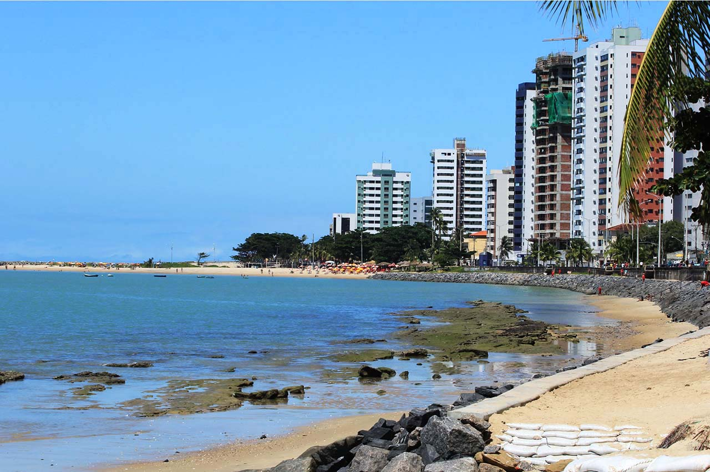
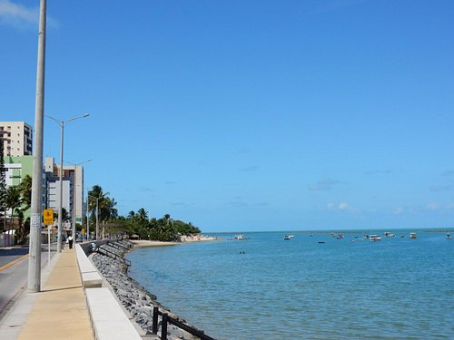
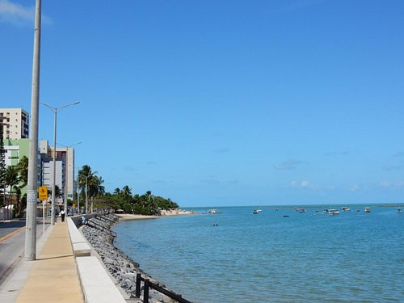
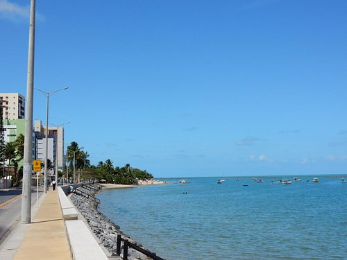
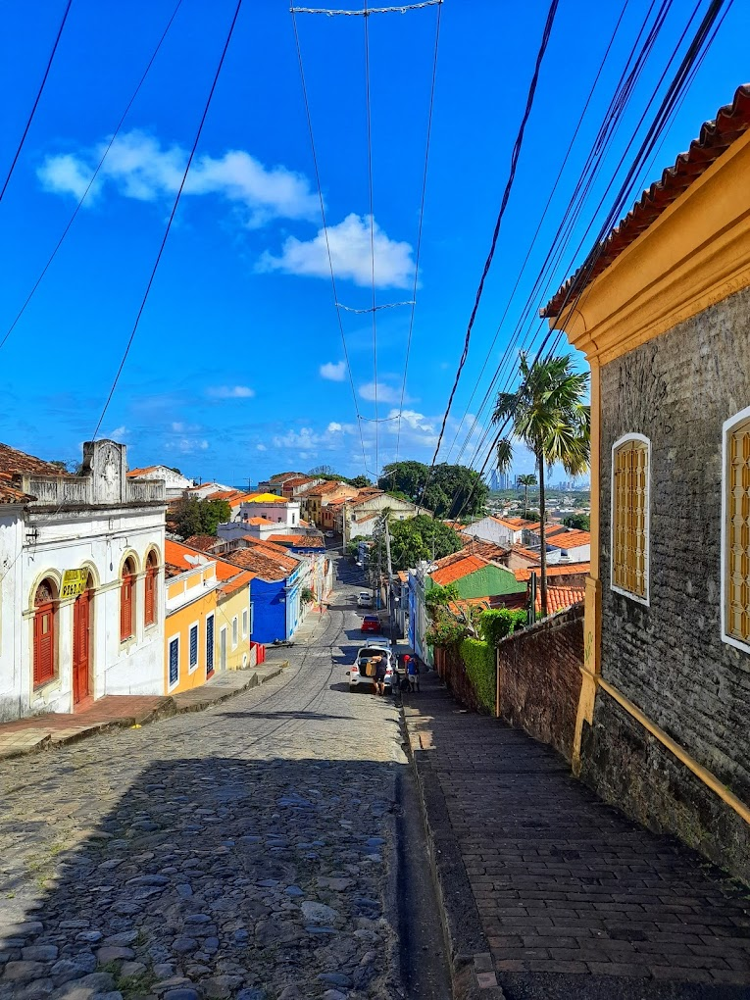
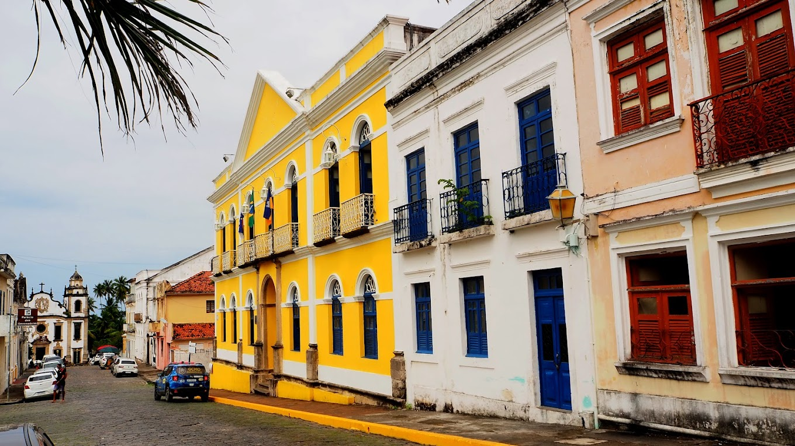

Bem-vindo à minha página sobre os pontos turísticos de Olinda, PE!
Praias em Olinda
Embora as praias mais populares estejam em cidades vizinhas, como Recife, Olinda tem algumas praias encantadoras, como: a praia de Casa Caiada, a do Farol e a de Rio Doce

 


Igrejas Históricas de Olinda
Olinda é famosa por suas igrejas históricas. Algumas das mais notáveis incluem a Igreja e Mosteiro de São Bento e a Catedral da Sé.

Centro Histórico de Olinda
O Centro Histórico é o melhor lugar para iniciar seus passeios e experiências por Olinda. É por lá que estão os principais monumentos, casarões, praças e igrejas com mais de 100 anos de história.
 